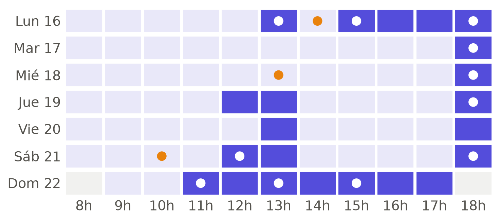
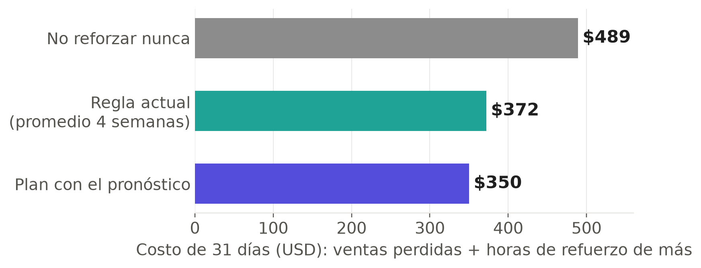
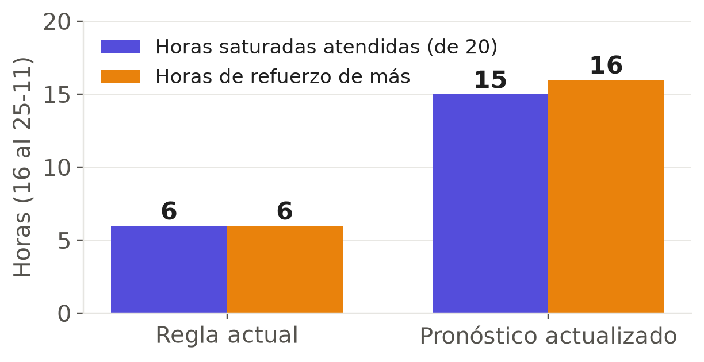
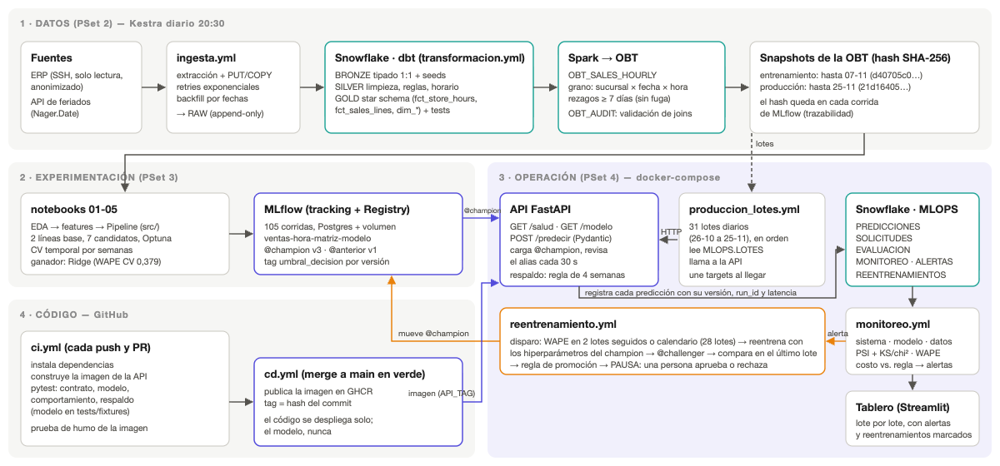

Pronóstico semanal de ventas por hora para decidir cuándo programar al vendedor de medio tiempo en la matriz. Resultado de 31 días de operación simulada con datos reales.
Luis Gerardo Torres Chicaiza · Universidad San Francisco de Quito · 26 de noviembre de 2026
La matriz abre de 8:00 a 19:00 con dos vendedores de sueldo fijo. A las 18:00, en los almuerzos y los domingos y lunes queda una sola persona en piso, justo cuando la venta no baja.
En esas horas la vendedora atiende sola, los clientes esperan y algunos se van sin comprar.
Para quién: la administradora, que arma el horario cada domingo, y las vendedoras que cubren esas horas.
Antes: nadie decide dónde reforzar; a lo sumo se repite lo de las últimas semanas.
Ahora: cada domingo el sistema pronostica las ventas de cada hora de la semana siguiente y propone en qué horas poner al medio tiempo. La administradora revisa, ajusta y publica el horario.
Ejemplo real: semana del 16 al 22 de noviembre. El plan cubrió 11 de las 14 horas saturadas.

Cada noche se copian las ventas del ERP, sin datos personales de clientes, y se limpian.
El domingo, ventas esperadas por hora de la semana siguiente.
Horas a reforzar. La administradora la ajusta y publica el horario.
Al cerrar cada día se compara lo previsto con lo vendido y se emiten alertas.
Si el pronóstico empeora, se entrena una versión nueva; una persona la aprueba o la rechaza.
Si algo falla, un botón de respaldo vuelve a la regla actual en segundos, sin detener el servicio. El detalle técnico está en el anexo.

Simulación sobre los 31 días posteriores al entrenamiento (26-10 a 25-11), con las ventas reales de la tienda.
Costo = ventas perdidas en horas saturadas sin refuerzo ($7,19 de margen cada una) + horas de refuerzo que no hacían falta ($2,65 la hora).
Frente a la regla, la ventaja es de 6 % y llegó después de actualizar el modelo (siguiente diapositiva).

Las primeras tres semanas, el pronóstico no le ganó a la regla: subestimaba la venta, que venía creciendo, y reforzaba poco donde hacía falta.
El 15-11 el sistema lo detectó y propuso una versión nueva. Se aprobó, y desde entonces atendió 15 de 20 horas saturadas (la regla, 6), a cambio de 10 horas de refuerzo de más.
Resultado de esos 10 días: $38 menos que la regla.
| Riesgo | Qué pasó en la prueba | Cómo se vigila y quién actúa |
|---|---|---|
| Un evento de demanda que el sistema no conoce (promoción, feria) | Simulamos dos días con el doble de ventas: la alerta saltó y se propuso una versión nueva | Alerta si el error sube dos días seguidos → la administradora aprueba o rechaza la actualización |
| Un error en los datos (se mezclan datos de otra sucursal) | Detectado el mismo día; no se tocó el modelo y ese día se excluyó del aprendizaje | Alerta al equipo de datos → se corrige la fuente |
| Que el plan cueste más que la regla | Pasó en las tres primeras semanas; la actualización lo revirtió | Revisión del costo cada 2 semanas → si se repite, botón de respaldo |
También hubo 8 avisos menores sin consecuencia (falsas alarmas). Por eso ninguna acción depende de un solo aviso.
Una hora saturada sin refuerzo la paga la vendedora que atiende sola (esfuerzo, clientes molestos) y el negocio (ventas perdidas).
Un refuerzo innecesario lo paga el negocio: $2,65 por hora.
Por eso el siguiente ajuste es un criterio propio para el fin de semana, y la brecha queda como alarma: si no se cierra en dos semanas, el plan deja de usarse los fines de semana.
Ninguna versión nueva entra en uso sola: el sistema muestra cuánto costaría cada versión y la administradora decide. El cambio se puede deshacer en 30 segundos.
Con un clic, la propuesta vuelve a la regla actual. Se activa solo si el sistema falla.
Una semana el plan pidió 22 horas. La administradora recorta las de menor carga para respetar el contrato de medio tiempo.
Todo queda registrado: cada propuesta dice qué versión la produjo y con qué datos, para poder explicar cualquier decisión después.
Por qué no escalar todavía: la ventaja sobre la regla es pequeña (6 %), se midió en un mes y supone que cada hora saturada pierde una venta. Solo un piloto con una persona real puede medir esa pérdida.
Por qué no retirar: frente a no hacer nada evita el 28 % del costo, y tras la actualización cubre el triple de horas saturadas que la regla.
| Qué se necesita | Costo |
|---|---|
| Vendedor de medio tiempo, hasta 20 h por semana | ~$53 por semana |
| Ajuste del criterio de fin de semana | 1 semana de trabajo |
| Servidor en la nube para operar sin el portátil | ~$20 al mes |
| Revisión del plan cada domingo | 20 min de la administradora |
| Diseño del piloto: días alternos con y sin refuerzo, comparado con la sucursal 2 | Incluido |
| Métrica | Valor | Consecuencia de negocio |
|---|---|---|
| Error del pronóstico (WAPE) | 0,37 (regla 0,38) | En una hora típica de 6 ventas se falla por ~2; alcanza para ubicar los picos, no para prometer cantidades exactas |
| Horas saturadas detectadas (tras la actualización) | 15 de 20 (regla 6) | 9 horas más con apoyo en 10 días |
| Refuerzos innecesarios (tras la actualización) | 16 (regla 6) | ~$26 en horas de más, compensadas por las ventas que se dejan de perder |
| Deriva de datos (PSI) y alertas | 3 de 3 fallas detectadas; 8 avisos menores | Un dato mal cargado no llega a cambiar el modelo |
| Tiempo de respuesta del servicio | 25 ms (p95), 0 errores | El plan semanal se genera en segundos |
| Versiones del modelo | v1 → v3 (aprobada el 15-11) | Se puede volver a la versión anterior en 30 s |
